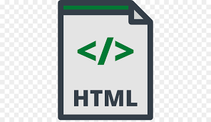

Desenvolvimento Web
Desenvolvimento web é a área da tecnologia voltada à construção de sites, aplicativos, softwares, bancos de dados e quaisquer outras ferramentas que, de certa forma, constroem a internet como a conhecemos hoje.
Principais Linguagens Dev Web
HTML
O desenvolvimento web é uma das áreas mais promissoras do momento em tecnologia. Afinal, a construção de sites é uma demanda cada vez maior, já que a maioria das empresas deseja um espaço na internet para não só se comunicar com seu público, mas também apresentar seu produto. Para aprender a criar websites usando programação e suprir essa alta demanda, a pessoa precisa conhecer e dominar o HTML (Hyper Text Markup Language, ou linguagem de marcação de textos), uma linguagem que fornece o esqueleto de toda página web. O HTML é uma tecnologia mais simples, porém efetiva e muito importante para uma carreira em TI. É essencial conhecer seus princípios e saber integrar as regras com as de outras linguagens, como CSS e JavaScript, para desenvolver aplicações robustas e funcionais na web.
CSS

CSS é chamado de linguagem Cascading Style Sheet e é usado para estilizar elementos escritos em uma linguagem de marcação como HTML. O CSS separa o conteúdo da representação visual do site. Pense na decoração da sua página. Utilizando o CSS é possível alterar a cor do texto e do fundo, fonte e espaçamento entre parágrafos. Também pode criar tabelas, usar variações de layouts, ajustar imagens para suas respectivas telas e assim por diante. CSS foi desenvolvido pelo W3C (World Wide Web Consortium) em 1996, por uma razão bem simples. O HTML não foi projetado para ter tags que ajudariam a formatar a página. Você deveria apenas escrever a marcação para o site. Tags como foram introduzidas na versão 3.2 do HTML e causaram muitos problemas para os desenvolvedores. Como os sites tinham diferentes fontes, cores e estilos, era um processo longo, doloroso e caro para reescrever o código. Assim, o CSS foi criado pelo W3C para resolver este problema. A relação entre HTML e CSS é bem forte. Como o HTML é uma linguagem de marcação (o alicerce de um site) e o CSS é focado no estilo (toda a estética de um site), eles andam juntos. CSS não é tecnicamente uma necessidade, mas provavelmente você não gostaria de olhar para um site que usa apenas HTML, pois isso pareceria completamente abandonado.
Java Script

Antes de mais nada, vamos deixar claro: Javascript não é Java. Apesar da confusão que as pessoas normalmente fazem sobre essas duas linguagens, Java e Javascript não possuem nenhuma ligação direta uma com a outra a não ser o java no nome. Tendo isso em mente, vamos para a definição de o que é Javascript. O JS ou JavaScript é uma linguagem de programação de alto-nível, criada no meio da década de 90, mais precisamente em 1996 pelo lendário programador Brendan Eich que, além de criar o JavaScript, foi também um dos fundadores da Mozilla Corporation. Ele criou a linguagem quando ainda trabalhava na Netscape Communications Corporation, originalmente criado para funcionar no navegador Netscape Navigator, seu objetivo era facilitar processos dentro de páginas web, tornado a programação de animações e alertas muito mais simples. Pouco tempo depois, cerca de 1 ano depois do seu lançamento, a Microsoft começou a aceitar esta linguagem em seu navegador da época, o que foi um dos grandes impulsionadores para consolidar o que é Javascript como uma das principais linguagens de programação dos dias de hoje. Desse tempo para cá, o JScript vem sofrendo diversas funções e aplicações diferentes, ficando mais versátil e completo de acordo com o tempo. Hoje, por exemplo, já é possível usar Javascript para criar aplicativos Desktop e Mobile, não só aplicações baseadas em web e navegadores.